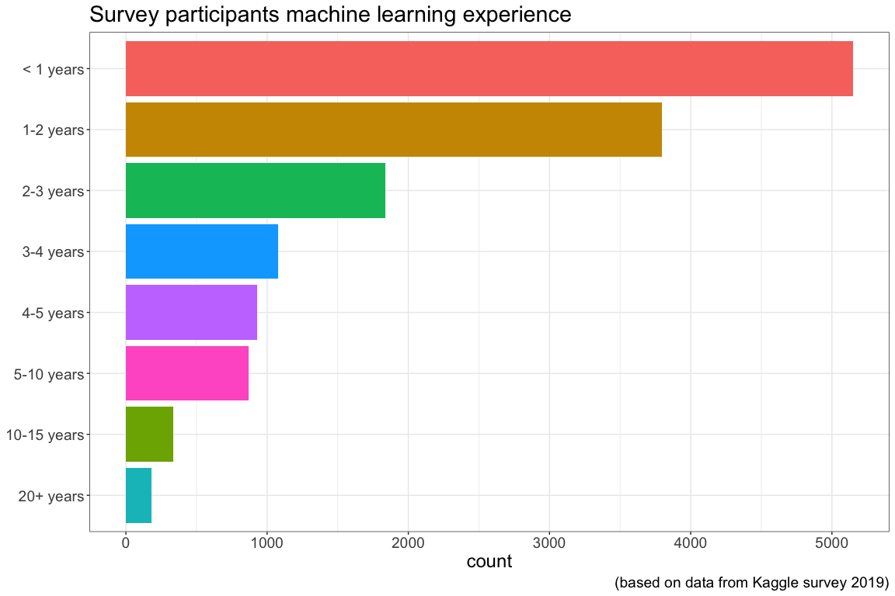
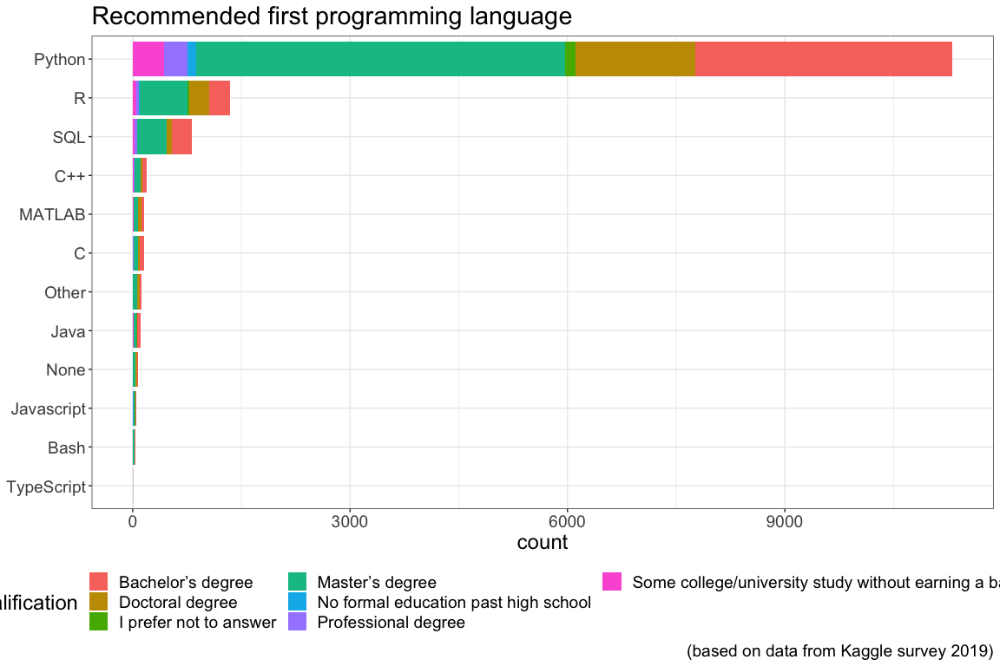
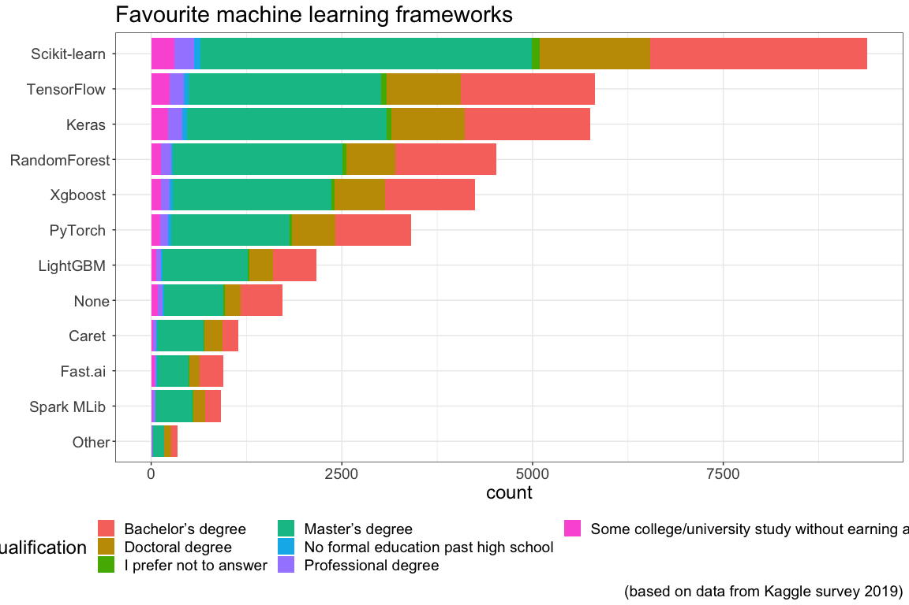

Chapter 23 Results
The results are presented by graphs relating parameters either vs time or vs other parameters.
23.1 Survey participants education level
The following plot shows survey participants education level. Very few participants have a non-academic background. By no means a academic background is a pre-requisit to use machine learning, however, two skills are very helpful
- Coding experience
- Statistical knowledge

Coding experience speeds up the process to implement the machine learning ideas and concepts. Most effort during a machine learning project will go into
- Data pre-processing
- Model tuning
The actual implementation of the algorithm is often a matter of 10 - 20 lines of code. Below the neural network definition for a self driving RC model car of the donkey car framework.
The neural network is defined using the Keras API which sits on top of Tensorflow, the program is written in Python
img_in = Input(shape=input_shape, name='img_in')
x = img_in
x = Convolution2D(24, (5,5), strides=(2,2), activation='relu', name="conv2d_1")(x)
x = Dropout(drop)(x)
x = Convolution2D(32, (5,5), strides=(2,2), activation='relu', name="conv2d_2")(x)
x = Dropout(drop)(x)
if input_shape[0] > 32 :
x = Convolution2D(64, (5,5), strides=(2,2), activation='relu', name="conv2d_3")(x)
else:
x = Convolution2D(64, (3,3), strides=(1,1), activation='relu', name="conv2d_3")(x)
if input_shape[0] > 64 :
x = Convolution2D(64, (3,3), strides=(2,2), activation='relu', name="conv2d_4")(x)
elif input_shape[0] > 32 :
x = Convolution2D(64, (3,3), strides=(1,1), activation='relu', name="conv2d_4")(x)
x = Dropout(drop)(x)
x = Convolution2D(64, (3,3), strides=(1,1), activation='relu', name="conv2d_5")(x)
x = Flatten(name='flattened')(x)
x = Dense(100, activation='relu', name="fc_1")(x)
x = Dropout(drop)(x)
x = Dense(50, activation='relu', name="fc_2")(x)
x = Dropout(drop)(x)
angle_out = Dense(15, activation='softmax', name='angle_out')(x)
throttle_out = Dense(20, activation='softmax', name='throttle_out')(x)
model = Model(inputs=[img_in], outputs=[angle_out, throttle_out])23.2 Who uses which algorithm
There are plenty of machine learning algorithms in use, some have been around for quite some time already, others are quite new. Especially in the field of neural networks there is plenty of research ongoing as can be seen by a search with the keywords neural network on the moderated but not peer reviewed electronic preprint platform Arxiv.
The last Qualification which is cut off in the legend in the plot above reads Some college/university study without earning a bachelors degree
Splitting the graphs up for each category of education and plotting the percentage of usage for the given education level gives an insight into how the usage of algorithms differs over levels of education

The graph above shows that regression and tree-based algorithms are very popular
They are:
- Less computationally intensive than neural networks
- Available in the de facto standard machine learning library in Python, scikit-learn.
Below historical data to some the algorithms are given, together with links to the Wikipedia article on the algorithm.
- Linear regression
- Legendre, 1805
- Gauss, 1809
- Logistic regression
- Pierre Francois Verhulst, 1830s
- Random forest
- Ho, 1995
- Gradient boosting trees
- L. Breiman, 1997
- Convolutional neural networks
- Kunihiko Fukushima, 1980
- Recurrent neural networks
- David Rumelhart, 1986
- Dense neural networks
- Independently proposed by Alexander Bain, 1873 and William James, 1890
- Generative adversarial networks
- Goodfellow, 2010-2014
23.3 Machine learning experience and algorithms
Most of the survey participants have less than 3 years machine learning experience as can be seen in the graph below. Due to fact that the number in each category differs a lot a representation of percentages is beneficial for some analysis.

The usage of algorithms for different duration of experience is given in the graph below.

Splitting the graphs up for each category of experience and plotting the percentage of usage for the given experience level gives an insight into how the usage of algorithms differs over levels of experience

- Regression and trees are popular at all level of experience
- Neural networks are more popular for less experienced
- 20% of very experienced use no algorithm
23.4 Experience and new algorithms
Newer algorithms there are:
- Evolutionary Approaches
- Transformer Networks (BERT, gpt-2, etc)
- Generative Adversarial Networks
where evolutionary approaches have been around for quite some time but the usage of them in machine learning is rather recent.
Splitting the graphs up for each category of experience and plotting the percentage of usage for the given experience level gives an insight into how the usage of new algorithms differs over levels of experience
From the above graph it can be deducted that:
- Very experienced use new algorithms less often
- Newbies embrace them
- Evolutionary approaches are popular for medium experienced
23.5 Role of participants
The role of the participants is shown in the graph below
The numbers for certain categories certainly have to be taken with a grain of salt since it is not clear how well participants will differentiate e.g.Data Scientist and Data Analyst. However, it is clear that students are quite active on Kaggle. This might influence the later data since students tend to use freeware more than professionals.
Also there are:
- Many Software engineers
- Very few Statistician
23.6 Company size
The company size of the participants is shown in the graph below

- Largest group of participants are from small companies
- Second largest group of participants are from small companies
23.7 Company incorporation of machine learning
The degree of machine learning utilization in the companies of the participants is shown in the graph below
All participants of companies with > 10,000 employees declare that "We have well established ML methods (i.e., models in production for more than 2 years)"
Splitting the graphs up for each category of company size and plotting the incorporation of machine learning shows this even more clearly

Leaving out the > 10,000 employees category for better comparison
- More companies explore machine learning than having it established
- Many companies dont use machine learning
- However, their employees invest in ML
- Danger of loosing employees
- Maybe companies are slow to discover ML potential
23.8 Favourite media sources on data science topics
The Favourite media sources on data science topics are shown in the graph below

The last Qualification which is cut off in the legend in the plot above reads Some college/university study without earning a bachelors degree
Those sources offer information about: - Algorithms - New publications - Projects - Releases of new software versions - Recommended courses, popular platforms see Favourite online course platform
A few links to sources are given below
23.9 Favourite online course platform
Platforms on which survey participants have begun or completed data science courses are shown in the graph below

All levels of academics are active on online course platforms. Below there are links to some of the platforms:
23.10 Favourite data analyzing tool
Participants primary tool to analyze data are shown in the graph below

Most like to use free tools using the programming language R and Python
23.11 Experience in data analysis coding
The duration of participants writing code to analyze data is shown in the graph below

The last Qualification which is cut off in the legend in the plot above reads Some college/university study without earning a bachelors degree
- Most have less than 5 years coding experience in data analysis
- Data analysis can be done without writing code
23.12 Favourite integrated development environments (IDEs)
Favourite integrated development environments (IDEs) are shown in the graph below

The last Qualification which is cut off in the legend in the plot above reads Some college/university study without earning a bachelors degree
Below a list of some IDEs, all of them are free except for Matlab.
- Jupyter Notebook
- Works with Python, R, Julia, C++, Ruby
- Visual Studio Code
- Works with Python, R, Julia, C++, Ruby , SQL, XML, Swift, JSON, Perl, Sass
- Debugger
- Variable viewer
- Console
- RStudio
- Mainly for R
- Debugger
- Variable viewer
- Console
- PyCharm
- For Python
- Debugger
- Variable viewer
- Matlab
- Very well established in industry
- Originally for control tasks
- Commercial tool
- Own syntax
23.13 Favourite hosted notebook products
Favourite hosted notebook products are shown in the graph below
The last Qualification which is cut off in the legend in the plot above reads Some college/university study without earning a bachelors degree
Hosted notebooks offer a very easy and comfortable start into writing machine learning code. Some of them are free. Some of them provide many examples from which valuable techniques can be learned.
- Kaggle Notebooks
- Great place to find machine learning examples
- Google Colab
- Colaboratory is a free Jupyter notebook environment that requires no setup and runs entirely in the cloud
- Binder
- Open notebooks in executable environment
- Microsoft Azure Notebooks
- Develop and run code from anywhere with Jupyter notebooks on Azure
- Paperspace
- Powering next-generation applications and cloud ML/AI pipelines.
23.14 Favourite programming languages
Favourite programming languages are shown in the graph below
The last Qualification which is cut off in the legend in the plot above reads Some college/university study without earning a bachelors degree
Hands down the most popular programming language for machine learning is Python. If speed matters C++ is the way to go, but still, Python can be used for prototyping.
23.15 Recommended entry programming language
Recommended programming language for aspiring data scientist to learn first are shown in the graph below

The last Qualification which is cut off in the legend in the plot above reads Some college/university study without earning a bachelors degree
As Python is the most popular machine learning programming language it is not surprising that it is also the most recommended one for beginners.
23.16 Favourite data visualization libraries or tools
Favourite data visualization libraries or tools are shown in the graph below
The last Qualification which is cut off in the legend in the plot above reads Some college/university study without earning a bachelors degree
With Matplotlib there is a clear winner, however, ggplot2 is the clear Favourite in the R world.
- Matplotlib
- Matplotlib is a Python 2D plotting library which produces publication quality figures in a variety of hard copy formats and interactive environments across platforms
- Seaborn
- Seaborn is a Python data visualization library based on matplotlib. It provides a high-level interface for drawing attractive and informative statistical graphics.
- ggplot2
- ggplot2 is a system for declaratively creating graphics, based on The Grammar of Graphics
- Available for R and Python
- Plotly
- Interactive plots
- Available for R and Python
- D3.js
- Data-Driven Documents
- Javascript based
- Can be used from R and Python
- Bokeh
- Bokeh is an interactive visualization library for modern web browsers.
23.17 Favourite specialized hardware
Favourite specialized hardware are shown in the graph below
 The last Qualification which is cut off in the legend in the plot above reads Some college/university study without earning a bachelors degree
The last Qualification which is cut off in the legend in the plot above reads Some college/university study without earning a bachelors degree
- CPU => Central Processing Unit
- Performs basic arithmetic, logic, and input output instructions
- Heart of every computing device
- GPU => Graphics Processing Unit
- Optimized processor for graphics
- Very fast matrix multiplication => speeds up neural network computation
- TPU => Tensor Processing Unit
- A tensor processing unit (TPU) is an AI accelerator application-specific integrated circuit (ASIC) developed by Google specifically for neural network machine learning.
- Edge TPU
- 4 TOPs19
- 2W
In Wei, Brooks, and others (2019) a comparison of the three processors with respect to machine learning capabilities is given:
TPU is highly-optimized for large batches and CNNs, and has the highest training throughput
GPU shows better flexibility and programmability for irregular computations, such as small batches and non- MatMul computations. The training of large FC models also benefits from its sophisticated memory system and higher bandwidth.
CPU has the best programmability, so it achieves the highest FLOPS utilization for RNNs, and it supports the largest model because of large memory capacity.
23.18 Favourite machine learning frameworks
Favourite machine learning frameworks are shown in the graph below
 The last Qualification which is cut off in the legend in the plot above reads Some college/university study without earning a bachelors degree
- Scikit-learn
- Machine Learning in Python
- Open source, commercially usable - BSD license
- TensorFlow
- An end-to-end open source machine learning platform
- Keras
- Keras is a high-level neural networks API, written in Python and capable of running on top of TensorFlow, CNTK, or Theano.
- RandomForest
- A random forest classifier
- Xgboost
- XGBoost is an optimized distributed gradient boosting library designed to be highly efficient, flexible and portable.
- PyTorch
- An open source machine learning framework that accelerates the path from research prototyping to production deployment.
- On 30.01.2020 OpenAI announced OpenAI PyTorch
- LightGBM
- LightGBM is a gradient boosting framework that uses tree based learning algorithms.
- Caret
- The caret package (short for Classification And REgression Training) is a set of functions that attempt to streamline the process for creating predictive models.
- For the programming language R
- Fast.ai
- Making neural nets uncool again
- Blogs
- MOOC20
23.19 Favourite cloud computing platforms
Favourite cloud computing platforms are shown in the graph below
The last Qualification which is cut off in the legend in the plot above reads Some college/university study without earning a bachelors degree
- Amazon Web Services (AWS)
- AWS has the services to help you build sophisticated applications with increased flexibility, scalability and reliability
- Google Cloud Platform (GCP)
- Build scalable apps
- Microsoft Azure
- Turn ideas into solutions with more than 100 services to build, deploy, and manage applicationsin the cloud, on-premises, and at the edgeusing the tools and frameworks of your choice.
- IBM Cloud
- Discover a faster, more secure journey to cloud trusted by thousands of enterprises across 20 industries
- VMware Cloud
- Manage your entire app portfolio across hybrid and native public clouds
- Oracle Cloud
- Oracle Cloud is a cloud computing service offered by Oracle Corporation providing servers, storage, network, applications and services through a global network of Oracle Corporation managed data centers.
- Salesforce Cloud
- Try the worlds #1 service platform: the time-saving, joy-boosting, relationship-building machine.
- Alibaba Cloud
- Experience the Latest in Cloud Computing, Storage, Networking, Security, Big Data and Artificial Intelligence on Alibaba Cloud
- SAP Cloud
- Achieve process excellence, deliver engaging digital experiences, and simplify data-driven innovation with a multi-cloud architecture.
- Red Hat Cloud
- Red Hat® Cloud Access is the program that allows our customers to run eligible Red Hat product subscriptions on certified public cloud providers.
23.20 Favourite big data / analytics products
Favourite big data / analytics products are shown in the graph below
The last Qualification which is cut off in the legend in the plot above reads Some college/university study without earning a bachelors degree
23.21 Favourite automated machine learning tools (or partial AutoML tools)
Favourite automated machine learning tools (or partial AutoML tools) are shown in the graph below
 The last Qualification which is cut off in the legend in the plot above reads Some college/university study without earning a bachelors degree
The last Qualification which is cut off in the legend in the plot above reads Some college/university study without earning a bachelors degree
References
Wei, Gu-Yeon, David Brooks, and others. 2019. Benchmarking Tpu, Gpu, and Cpu Platforms for Deep Learning. arXiv Preprint arXiv:1907.10701.